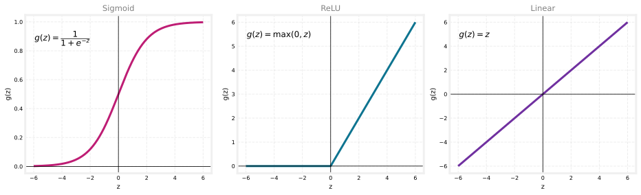
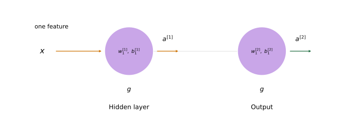
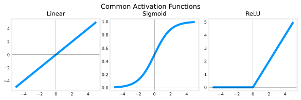
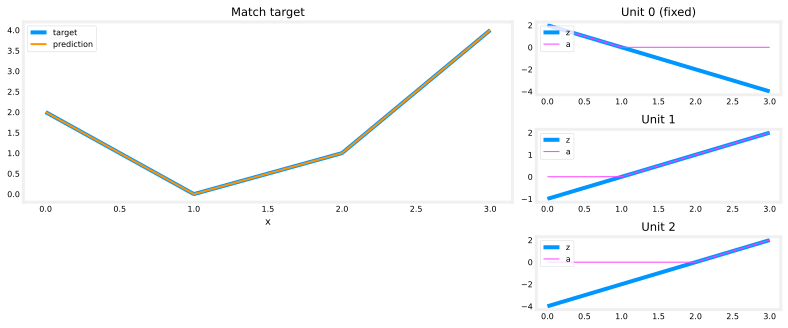

Activation Functions
machine-learning
neural-networks
How ReLU, linear, and sigmoid activations work, and how to choose them for the output layer and the hidden layers of a neural network.
So far every neuron, in every hidden layer and in the output layer, has used the sigmoid activation function \(g(z)\). That was a natural starting point, because these networks were built up from logistic regression units strung together, and logistic regression uses the sigmoid. But sticking to the sigmoid everywhere is a choice, not a requirement. Swapping in other activation functions can make a neural network much more powerful.
Why Sigmoid Is Limiting
Recall the demand prediction example introduced earlier. Given price, shipping cost, marketing, and material, the network tried to predict whether a t-shirt would be a top seller, using intermediate quantities such as affordability, awareness, and perceived quality.
Take the awareness neuron. Modeling awareness with a sigmoid forces its output to sit between 0 and 1, as if awareness were essentially binary, either people know about the shirt or they do not. In reality awareness is not binary at all. Possible buyers might be a little aware, somewhat aware, or extremely aware, and a product could even go completely viral. That is not a quantity that caps out at 1. It can be any non-negative number, from 0 all the way up to very large values.
Previously the awareness unit (the second unit of the first hidden layer) was computed with the sigmoid,
\[ a_2^{[1]} = g\!\left(\vec{w}_2^{[1]} \cdot \vec{x} + b_2^{[1]}\right), \qquad g(z) = \frac{1}{1 + e^{-z}}, \]
which squashes everything into the range 0 to 1. To let \(a_2^{[1]}\) take on much larger positive values, we simply swap \(g\) for a different activation function.
Review Questions
1. Why did every neuron start out using the sigmoid activation function?
TipAnswer
Because these networks were built up from logistic regression units strung together, and logistic regression uses the sigmoid. It was a natural starting point, not a rule.
1. What is the problem with using a sigmoid for the awareness neuron in the demand prediction example?
TipAnswer
The sigmoid forces the output between 0 and 1, treating awareness as almost binary. Real awareness is not binary. It can be a little, somewhat, extremely high, or viral, so it is better modeled as any non-negative number, which the sigmoid cannot produce.
ReLU Activation Function
A very common choice of activation function that allows large non-negative outputs is
\[ g(z) = \max(0, z). \]
Its graph is flat at 0 for every negative \(z\), and then, once \(z\) reaches 0, it becomes a straight 45 degree line going up. In other words, when \(z\) is greater than or equal to 0, \(g(z)\) is just equal to \(z\), and when \(z\) is negative, \(g(z)\) is 0. If the awareness unit uses this activation, its value can now be 0 or any positive number, with no upper cap.
This activation function has a name. It is called ReLU, with that unusual capitalization, which stands for rectified linear unit. The words “rectified” and “linear unit” are not worth worrying about. That was simply the name the authors gave it. Almost everyone in deep learning just says ReLU when referring to this \(g(z)\).
Review Questions
1. Write the ReLU activation function and describe its graph.
TipAnswer
ReLU is \(g(z) = \max(0, z)\). Its graph is flat at 0 for all negative \(z\), then rises as a straight 45 degree line for \(z \geq 0\), where \(g(z) = z\).
1. What does ReLU stand for?
TipAnswer
Rectified linear unit. The name itself is not important. What matters is that \(g(z) = \max(0, z)\).
Three Common Activation Functions
More generally, \(g(z)\) is a choice, and sometimes something other than the sigmoid is the better pick. The three most commonly used activation functions in neural networks are the following.
- Sigmoid, \(g(z) = \dfrac{1}{1 + e^{-z}}\), which always outputs a value between 0 and 1.
- ReLU, \(g(z) = \max(0, z)\), which outputs 0 for negative \(z\) and \(z\) itself for non-negative \(z\).
- Linear, \(g(z) = z\), which simply passes \(z\) straight through.
NoteColor convention for activation functions
These notes use one color per activation function, in plots, in network diagrams, and in code. Sigmoid is magenta, ReLU is cyan, linear is purple, and softmax (introduced later) is amber. When you see a colored neuron in a diagram or a colored activation= value in code, the color tells you which activation is in play. Input-layer nodes are gray, because the input layer holds the raw features and applies no activation function at all.
The linear activation deserves a note. When a neuron uses \(g(z) = z\), its output is just \(a = \vec{w} \cdot \vec{x} + b\), as if there were no \(g\) at all. For that reason some people say they are “not using any activation function” when they mean the linear activation function. Both phrases describe the same thing. These notes will always call it the linear activation function rather than “no activation function,” but the other wording means exactly the same idea.
These three cover a great deal. With just the sigmoid, ReLU, and linear activations, you can already build a rich variety of powerful neural networks. There is a fourth one, the softmax activation function, which comes up in a later section.
Review Questions
1. Name the three most commonly used activation functions and give the formula for each.
TipAnswer
Sigmoid, \(g(z) = \dfrac{1}{1 + e^{-z}}\). ReLU, \(g(z) = \max(0, z)\). Linear, \(g(z) = z\).
1. Someone says they are “not using any activation function” on a neuron. Which activation function are they actually using?
TipAnswer
The linear activation function, \(g(z) = z\). With it, the neuron’s output is just \(\vec{w} \cdot \vec{x} + b\), as if there were no \(g\) at all, which is why people describe it that way.
With the sigmoid, ReLU, and linear activation functions available, the next question is how to decide which one to use for each neuron. Different neurons in the same network can use different activation functions, and the choice splits naturally into two parts, the output layer and the hidden layers.
Choosing the Output Layer Activation
For the output layer there is usually one fairly natural choice, and it depends on what the target label \(y\) is.
NoteOutput layer, choose by the label \(y\)
- Sigmoid when \(y\) is 0 or 1 (binary classification)
- Linear when \(y\) can be positive or negative
- ReLU when \(y\) can only be non-negative
Binary classification, \(y\) is 0 or 1. The sigmoid is almost always the most natural choice, because the network then learns to predict the probability that \(y = 1\), just like logistic regression does. If you are working on a binary classification problem, use sigmoid at the output layer.
Regression, \(y\) can be positive or negative. Suppose you are trying to predict how tomorrow’s stock price will change compared to today’s. It can go up or down, so \(y\) is a number that can be either positive or negative. Here the recommendation is the linear activation function. The output of the network is
\[ f_{\vec{w},b}(\vec{x}) = a^{[3]} = g\!\left(z^{[3]}\right) \]
in a three layer network, and with the linear activation function \(g(z)\) can take on either positive or negative values, which matches what \(y\) can be.
Regression, \(y\) can only be non-negative. If \(y\) can never go below zero, such as the price of a house, then the most natural choice is ReLU, because \(\max(0, z)\) only takes on non-negative values, either zero or positive.
This guidance is essentially how practitioners pick the output activation every time. Look at what values the label \(y\) can take, and pick the activation function whose output range matches.
Review Questions
1. You are building a network to predict whether an email is spam (\(y\) is 0 or 1). Which output layer activation should you use, and why?
TipAnswer
Sigmoid. For binary classification the network then learns to predict the probability that \(y = 1\), exactly like logistic regression.
1. Match each label with its natural output activation. (i) Tomorrow’s stock price change, which can be positive or negative. (ii) The price of a house, which can never be negative. (iii) A 0 or 1 label.
TipAnswer
- Linear, because \(g(z) = z\) can be positive or negative. (ii) ReLU, because \(\max(0, z)\) only produces non-negative values. (iii) Sigmoid, because it outputs a probability between 0 and 1.
Summary and TensorFlow Implementation
Putting the recommendations together.
- Output layer. Use sigmoid for a binary classification problem. Use linear if \(y\) is a number that can be positive or negative. Use ReLU if \(y\) can only take on non-negative values.
- Hidden layers. Just use ReLU as the default activation function.
In TensorFlow this only changes the activation argument of each Dense layer. Rather than activation="sigmoid" everywhere as before, the hidden layers ask for ReLU, and the output layer uses whichever activation fits the label.
import tensorflow as tf
from tensorflow.keras.models import Sequential
from tensorflow.keras.layers import Dense
model = Sequential([
Dense(units=25, activation="relu"), # hidden layer 1
Dense(units=15, activation="relu"), # hidden layer 2
Dense(units=1, activation="sigmoid"), # output layer (binary classification)
])The hidden layers use "relu" and the output layer uses "sigmoid", the natural choice for this binary classification example.
For a different output layer, swap the last line’s activation for activation="linear" or activation="relu". With this richer set of activation functions, you are well positioned to build much more powerful neural networks than ones using only the sigmoid.
NoteOther activation functions in the research literature
You will sometimes see authors use other activation functions, such as tanh, LeakyReLU, or swish. Every few years researchers come up with another interesting activation function, and sometimes they do work a little bit better. LeakyReLU, for example, can sometimes work a little better than ReLU. But for the vast majority of applications, the sigmoid, ReLU, and linear activations covered here are good enough, and there is only a small handful of cases where the other ones are more powerful.
This raises yet another question. Why do we even need activation functions at all? Why not just use the linear activation function, or no activation function, everywhere? It turns out this does not work at all, as the next section shows.
Review Questions
1. Fill in the blanks in this TensorFlow model for predicting a house price, which can never be negative.
model = Sequential([
Dense(units=25, activation=______),
Dense(units=15, activation=______),
Dense(units=1, activation=______),
])
TipAnswer
The two hidden layers use "relu" (the default recommendation for hidden layers). The output layer also uses "relu", because the house price \(y\) can only take on non-negative values.
1. Name three activation functions from the research literature beyond sigmoid, ReLU, and linear. Do you need them for most applications?
TipAnswer
Tanh, LeakyReLU, and swish. No. Sometimes they work a little better (LeakyReLU occasionally beats ReLU), but for the vast majority of applications, sigmoid, ReLU, and linear are good enough.
Why Neural Networks Need Activation Functions
Here is a natural question. Why bother with activation functions at all? Why not use the linear activation function \(g(z) = z\), or equivalently no activation function, in every neuron? It turns out this does not work at all. If every node used a linear activation, the whole network would collapse into nothing more than linear regression, which defeats the entire purpose of building a neural network. It could not fit anything more complex than the simple linear model from the first course.
Small Example
The cleanest way to see this is with a tiny network. Let the input \(x\) be a single number. There is one hidden unit with parameters \(w_1^{[1]}\) and \(b_1^{[1]}\) that outputs a number \(a^{[1]}\), and then one output unit with parameters \(w_1^{[2]}\) and \(b_1^{[2]}\) that outputs the final number \(a^{[2]} = f(x)\).

Suppose both units use the linear activation, \(g(z) = z\). The hidden unit computes
\[ a^{[1]} = g\!\left(w_1^{[1]} x + b_1^{[1]}\right) = w_1^{[1]} x + b_1^{[1]}, \]
because \(g\) does nothing. The output unit then computes
\[ a^{[2]} = g\!\left(w_1^{[2]} a^{[1]} + b_1^{[2]}\right) = w_1^{[2]} a^{[1]} + b_1^{[2]}. \]
Substituting the expression for \(a^{[1]}\) into this,
\[ a^{[2]} = w_1^{[2]}\left(w_1^{[1]} x + b_1^{[1]}\right) + b_1^{[2]} = \underbrace{w_1^{[2]} w_1^{[1]}}_{w}\, x + \underbrace{w_1^{[2]} b_1^{[1]} + b_1^{[2]}}_{b}. \]
If we let \(w = w_1^{[2]} w_1^{[1]}\) and \(b = w_1^{[2]} b_1^{[1]} + b_1^{[2]}\), this is simply
\[ a^{[2]} = w x + b, \]
a plain linear function of the input \(x\). So instead of a network with a hidden layer and an output layer, we might as well have used a single linear regression model. If you know some linear algebra, this is the familiar fact that a linear function of a linear function is itself a linear function. Stacking more linear layers never buys any extra expressive power.
General Case
The same thing happens in a larger network. Take a network with three hidden layers and a single output unit, and suppose every hidden layer uses a linear activation.
If the output layer is also linear, its computation is
\[ \vec{a}^{[4]} = \vec{w}_1^{[4]} \cdot \vec{a}^{[3]} + b_1^{[4]}. \]
Because \(\vec{a}^{[3]}\) is itself a linear function of the input \(\vec{x}\), this whole expression is again just a linear function of \(\vec{x}\), so the model is equivalent to plain linear regression, output included.
If instead every hidden layer is linear but the output layer uses the sigmoid (logistic) activation, the output becomes
\[ \vec{a}^{[4]} = \frac{1}{1 + e^{-\left(\vec{w}_1^{[4]} \cdot \vec{a}^{[3]} + b_1^{[4]}\right)}}, \]
which is exactly logistic regression applied to the inputs. Either way, the big network does nothing that plain linear or logistic regression could not already do. This is why a common rule of thumb is to avoid linear activations in the hidden layers.
NoteRule of thumb
Do not use the linear activation function in the hidden layers of a neural network. Using ReLU for the hidden layers is the standard recommendation and works well. Activation functions other than the linear one are what let a network learn something more complex than a straight line.
You have now seen how to build neural networks for binary classification, where \(y\) is 0 or 1, and for regression, where \(y\) can be positive, negative, or non-negative. The next step is a generalization of classification to the case where \(y\) can take on more than two values, such as three, four, ten, or more categories.
Review Questions
1. What happens if every neuron in a neural network uses the linear activation function?
TipAnswer
The entire network collapses to plain linear regression. Because a linear function of a linear function is again linear, the extra layers add no expressive power, and the model cannot fit anything more complex than a straight-line (linear) model.
1. In the small two-layer example with linear activations, the output is \(a^{[2]} = w_1^{[2]}(w_1^{[1]} x + b_1^{[1]}) + b_1^{[2]}\). Show why this is just a linear function \(wx + b\).
TipAnswer
Expanding gives \(a^{[2]} = w_1^{[2]} w_1^{[1]} x + w_1^{[2]} b_1^{[1]} + b_1^{[2]}\). Setting \(w = w_1^{[2]} w_1^{[1]}\) and \(b = w_1^{[2]} b_1^{[1]} + b_1^{[2]}\) turns it into \(a^{[2]} = wx + b\), which is a plain linear function of \(x\).
1. If all hidden layers use a linear activation but the output layer uses a sigmoid, what model is the network equivalent to?
TipAnswer
Logistic regression. The output can be written as \(a = \dfrac{1}{1 + e^{-(wx + b)}}\) for some \(w\) and \(b\), which is exactly the logistic regression model.
Lab: The ReLU Activation
This optional lab looks more closely at the ReLU activation function and, more importantly, at why its “off” region makes it non-linear and therefore useful. The code is written out so you can read and run it yourself.
First, the imports. TensorFlow provides the activation functions themselves (linear, sigmoid, relu), so the lab uses TensorFlow’s own versions rather than re-deriving them.
%config InlineBackend.figure_formats = ['svg']
import numpy as np
import matplotlib.pyplot as plt
import tensorflow as tf
import logging
logging.getLogger("tensorflow").setLevel(logging.ERROR)
plt.style.use("../../deeplearning.mplstyle")Three Common Activations Side by Side
The three activation functions from this page, drawn from the same input range so their shapes can be compared directly. tf.keras.activations.linear, .sigmoid, and .relu are exactly the functions TensorFlow uses inside a Dense layer when you pass activation="linear", "sigmoid", or "relu".
X = np.linspace(-5, 5, 100)
activations = [
(tf.keras.activations.linear, "Linear"),
(tf.keras.activations.sigmoid, "Sigmoid"),
(tf.keras.activations.relu, "ReLU"),
]
fig, ax = plt.subplots(1, 3, figsize=(8, 2.6))
for a, (fn, title) in zip(ax, activations):
a.plot(X, fn(X))
a.axvline(0, lw=0.3, c="black")
a.axhline(0, lw=0.3, c="black")
a.set_title(title)
fig.suptitle("Common Activation Functions", fontsize=13)
fig.tight_layout(pad=0.3)
plt.show()
Notice the shape of the ReLU on the right. It is flat (output 0) for every negative input, then turns into a straight 45 degree line for positive input. That flat “off” region is the whole point of what follows.
ReLU and Continuous Features
Think back to the demand prediction example. The derived “awareness” feature is not really binary. It has a continuous range of values, from no awareness at all up to very high awareness. The sigmoid is best for on/off or binary situations, because it saturates toward 0 and 1. The ReLU instead gives a continuous linear relationship for positive inputs, while still having an “off” range where the output is exactly zero. That combination, a continuous ramp plus a hard off region, is what makes it so useful.
Why Non-Linear Activations Matter
The “off” region is exactly what makes the ReLU a non-linear activation. Here is why that matters, made tangible.
A piecewise-linear function is built from straight segments whose slope changes abruptly at certain transition points. At each transition point, a new straight-line piece is added on top of the existing function. The trick is that this new piece must contribute nothing before its transition point, and only switch on afterward. The ReLU’s off region is what lets a unit stay silent until it is needed.
To see this concretely, consider a small regression problem. The target is a piecewise-linear curve made of three segments, and the network below must reproduce it.
- The first hidden layer has three ReLU units. Each one is responsible for one segment of the target.
- Unit 0 is fixed and already maps the first segment, using \(w = -2\), \(b = 2\).
- You set the weights of Unit 1 and Unit 2 to build the second and third segments.
- The output unit is also fixed. It simply adds up the three unit outputs.
Use the sliders to adjust \(w_1, b_1\) (Unit 1) and \(w_2, b_2\) (Unit 2) until the orange prediction matches the blue target. A hint: start with \(w_1\) and \(b_1\) and leave \(w_2, b_2\) at zero until the second segment lines up, then move on to the third. In the small unit plots, the blue line is the linear score \(z\) and the magenta line is the ReLU output \(a = \max(0, z)\).
How the ReLU Stitches the Segments Together
Once the prediction matches, the reason it works becomes clear. The plots below show each unit with the solution weights in place. For each unit, the linear score \(z\) is in blue and the ReLU output \(a = \max(0, z)\) is in magenta.
X = np.linspace(0, 3, 300)
# piecewise-linear target: three straight segments joined end to end
target = np.r_[-2 * X[:100] + 2, X[100:200] - 1, 3 * X[200:] - 5]
def unit_output(x, w, b):
z = w * x + b
return z, np.maximum(0, z) # linear score, then the ReLU "off below zero"
# unit 0 is fixed; units 1 and 2 use the values that solve the exercise
params = [(-2, 2), (1, -1), (2, -4)]
yhat = sum(np.maximum(0, w * X + b) for w, b in params)
dlblue, dlorange, dlmagenta = "#0096ff", "#FF9300", "#FF40FF"
fig = plt.figure(figsize=(11, 4.6))
gs = fig.add_gridspec(3, 2, width_ratios=[2, 1])
axm = fig.add_subplot(gs[0:2, 0])
axm.plot(X, target, color=dlblue, label="target")
axm.plot(X, yhat, color=dlorange, lw=2, label="prediction")
axm.set_title("Match target"); axm.set_xlabel("x"); axm.legend()
for i, (w, b) in enumerate(params):
ax = fig.add_subplot(gs[i, 1])
z, a = unit_output(X, w, b)
ax.plot(X, z, color=dlblue, label="z")
ax.plot(X, a, color=dlmagenta, lw=1, label="a")
ax.set_title(f"Unit {i}" + (" (fixed)" if i == 0 else ""))
ax.legend(fontsize=8, loc="upper left")
fig.tight_layout()
plt.show()
Reading the units from the top:
- Unit 0 handles the first segment. Its ReLU cuts the output off after \(x = 1\), which is important because it stops Unit 0 from interfering with the later segments.
- Unit 1 handles the second segment. The ReLU keeps it silent until \(x = 1\). Because Unit 0 has switched off by then, the slope of Unit 1, \(w_1^{[1]}\), is just the slope of the target line there. The bias is set to keep the score negative (so the output is zero) until \(x\) reaches 1. Its contribution then continues into the third segment as well.
- Unit 2 handles the third segment. The ReLU again zeros the output until \(x\) reaches 2. Its slope \(w_2^{[1]}\) is chosen so that Unit 1 and Unit 2 together give the steeper slope the target needs, and the bias keeps it off until \(x = 2\).
The “off” feature of the ReLU is what lets a model stitch together linear pieces to build a complex non-linear function. A purely linear activation could never do this, because it can never switch off.
TipSolution weights
Unit 1: \(w_1 = 1\), \(b_1 = -1\). Unit 2: \(w_2 = 2\), \(b_2 = -4\). With these, the three ReLU units produce \(-2x + 2\) on \([0, 1]\), then \(x - 1\) on \([1, 2]\), then \(3x - 5\) on \([2, 3]\), which is exactly the target.
Review Questions
1. In the exercise, why must each ReLU unit stay “off” (output zero) until its own segment begins?
TipAnswer
So it does not interfere with the earlier segments. If a unit contributed before its transition point, it would change the slope of segments it is not responsible for. The ReLU’s off region lets each unit switch on only when its segment starts, so the pieces add up cleanly.
1. Why can a network with only linear activations never reproduce this piecewise-linear target, no matter how many units it has?
TipAnswer
A sum of linear functions is still a single linear function, one straight line. Reproducing a curve with changing slopes requires units that can switch on and off at different points, which needs a non-linear activation such as the ReLU.